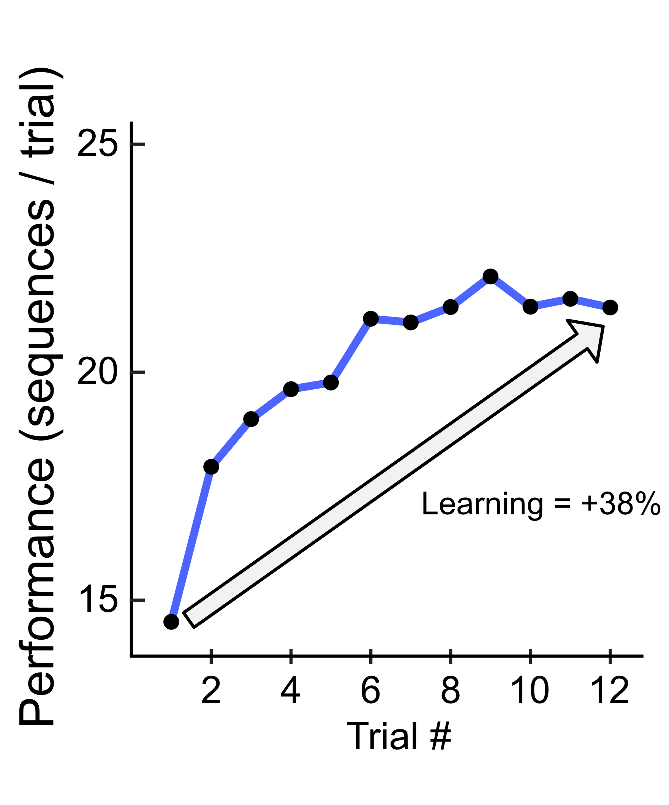
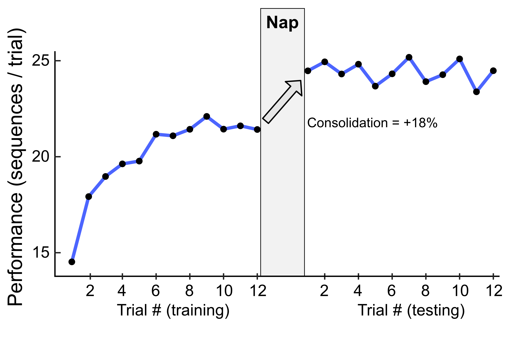
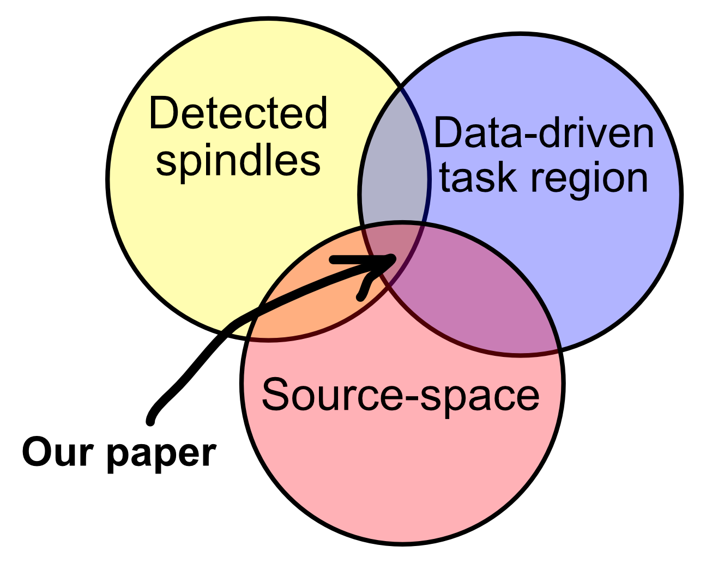

Quick paper summary: Sleep spindles, motor learning and sleep-dependent memory consolidation
This is a non-technical (or at least less technical) summary of the paper “Increased sleep spindles in regions engaged during motor learning predict memory consolidation” by Sjøgård et al. (2025), which was recently published in Journal of Neuscience.
Background: Learning and consolidation
Motor tasks like the finger-tapping task (MST) are easy to use when studying memory, as they can be very standardized. In this case, tap a sequence of five numbers on a keypad as quickly and accurately as you can for 30 seconds. Then rest 30 seconds and repeat for 12 total trials. Instructions are simple, the task involved very little higher-level cognitive processing or sensory input, there’s no language component, and it is not tiring. The outcome measures are easy to calculate and conceptualize, e.g. the number of correctly typed sequences per trial or typing speed for correctly typed sequences. Here we’re studying the total amount of learning, so we calculate the percent increase in the amount of correct sequences typed from the first trial to the average of the last three trials.

As expected, people start typing relatively few sequences in the first trial (here, ~15) and then quickly get better until they hit a plateau somewhere around the 6th trial and stay there until the end. Here, we had 26 participants, and the figure shows the average number of sequences per trial for the 12 learning trials. The line connecting the dots is just for ease of visualization. On average, participants increased performance by 38% from start to end. We call this their initial learning or learning during training.
After completing the initial learning block of 12 trials, the participants took a nap of up to 90 minutes. After the nap, we test them again with the exact same setup: the same sequence, with 12 thirty-second trials. But then something pretty remarkable happens:

They get better! Participants have improved just by sleeping, by an average of 18%.
This is all in line with previous research. Sleep-dependent memory consolidation is a well studied phenomenon and both the initial learning rate and consolidation are about what we would expect. In order to discuss the actual research question of this paper we need to introduce some neuroimaging. Specifically, we need to talk about MEG and EEG, sleep spindles and the concept of cortical task activation. We can do all three by discussing what the previous literature had shown and what we found to be a critical missing piece of research.
MEG and EEG
We wanted to measure participants’ brain activity while they performed the MST and while they were sleeping, so that we could look at relationships between what happened in their brains while they were learning and while they were consolidating during the nap. We also had them come in one week earlier to measure their brain activity during a nap without any learning beforehand, as a baseline.
Sleep spindles and sleep spindle detection
.
Task activation and the concept of a task region.
.
